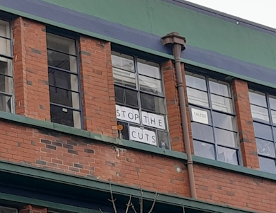

My First Post
My First Post
A witty subcaption
Look, folks, the problem with airline food is this. asd asd sad as lore masd mlkasdlksadlksajdklasjdlsakjdasljdaslkjdaslkj
dlsak jlkdjas
lkjdlasjdlsakjdklasjdlksajlsajaslkjsalkjdaslkdjksajdasdjasl

Even the windows are crying out, it seems.
This is a witty remark about what the image is.
A second witty subcaption
This is a big problem, as we all unnderstand extremely well. Now for some quoted text.
Polls manipulate the undecidable. Do they affect votes? True of false? Do they yield exact photographs of reality, or of mere tendencies, or a refraction of this reality in a hyperspace of simulation whose curvature we do not know? True or false? Undecidable.
Anyway: this is massive, whether we like it or not. Chippie is frankly really starting to get out of hand, and it’s very unsettling — how long until luxon pounces?